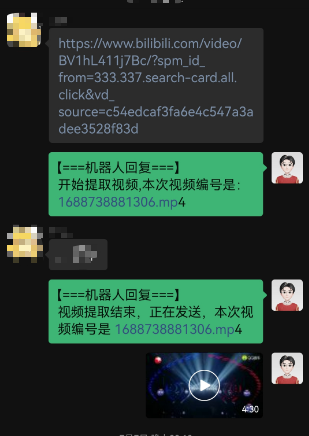

本文提供一个通过java编程将微信打造成得力助手的方案, 先看效果：
查看支持的功能与对该功能开放的用户

接入人工智能


下载BiliBili 视频

原理
这个方案最难的地方就是如何把个人账号安全的接入微信，不会被封号。网上主流的有逆向web端微信，这种方式的好处是，可以在linux 服务器上部署，不依赖第三方工具， 但是这种很容易被发现，会出现警告，甚至封号处罚的风险。
本文提供的方案是， 搭建一个特殊的外挂服务，可以监听到微信消息的到达，以及操作微信发送各种消息。这特殊的服务开放了两个端口，一个端口可以通过 socket 编程，循环接收微信到达的消息，一个端口可以接收HTTP请求，用来获取好友信息，发送消息等等。
剩下就可以用自己熟悉的语言针对这两个端口操作了：接收到特定的消息，做特定的动作。
微信外接服务
这个是整个方案中最难的环节，但是，不用自己动手， github 已有现成的工具， 只需把它集成到我们自己的服务中即可： https://github.com/ljc545w/ComWeChatRobot
java 中可以通过 JNI 方式调用 c++ 编写 dll 库，示例如下:
在java中声明dll中的已有的方法
public interface WxDll extends Library {
// 打开微信
int new_wechat();
// 开始监听微信消息
int start_listen(int a, int b);
// 停止监听
int stop_listen(int a);
}
初始化外界服务
public static void init(int port) throws IOException {
int pid = getPid("WeChat.exe");
if(pid == 0) {
System.out.println("微信没有运行");
System.exit(0);
return;
}
String injectExe = getAbPath("driver/CWeChatRobot.exe");
// 卸载
Runtime.getRuntime().exec(injectExe + " /unregserver");
// 注入
Runtime.getRuntime().exec(injectExe + " /regserver");
String dll64 = getAbPath("driver/wxDriver64.dll");
String dll32 = getAbPath("driver/wxDriver.dll");
// 根据系统选择注入程序的版本
WxDll driver = (WxDll) Native.load(System.getProperty("os.arch").equals("amd64") ? dll64 : dll32, WxDll.class);
// 开启服务，接收HTTP请求
driver.start_listen(pid, port);
}
监听微信消息
/**
* 开放 socket,
* @param port 端口
*/
public static void openSocket (int port) {
Map<String, Object> params = new HashMap<>();
params.put("port", port);
// 发送HTTP请求，打开 socket 接口,可以用来接收消息
BaseResult result = WebTool.post(baseUrl + ":" + Config.instance().HTTP_PORT + "/api/?type=9",params,BaseResult.class);
assert result != null;
if(!result.isOk()){
throw new RuntimeException("打开socket失败");
}
}
public static void startListenMsg() throws IOException {
// 创建一个线程池，异步处理接收到消息
ThreadPoolExecutor threadPoolExecutor = new ThreadPoolExecutor(2, 8,
10L, TimeUnit.MILLISECONDS,
new LinkedBlockingQueue<Runnable>());
ServerSocket server = new ServerSocket(Config.instance().SOCKET_PORT);
while (true) {
// 循环监听
Socket socket = server.accept();
// ReceiveMsgContext 处理接收到的消息
threadPoolExecutor.submit(new ReceiveMsgContext(socket));
}
}
以上就是该方案的核心了，剩下的处理消息的代码，用户完全可以自定义开发了。下面介绍我编写的一种实现方案:
项目结构
入口
public class Main{
public static void main(String[] args) throws IOException {
// 初始化配置
Config config = Config.loadConfig();
// 初始化外挂
WxTool.init(config.HTTP_PORT);
// 开启消息监听, 即监听 socket port 端口
WxTool.openSocket(config.SOCKET_PORT);
// 允许从控制台输入文本，发送消息 这是根据我自己的需求，可以在控制台回复微信消息
WxTool.receiveMsgFromConsole();
// TODO 自动扫描, 希望以后实现包的自动扫描功能，降低代码的耦合，完全实现 OCP原则, 现在先手动注入各种消息处理器
// 注册消息处理器
// 简单消息处理器，近记录某些好友的消息，并显示在控制台上
WxTool.regist(new SampleMsgHandler());
// 帮助文档处理器，可以查看各种处理器的功能，以及使用方法，和该功能开放的用户
WxTool.regist(new BotMsgHelperHandler());
// 人工智能， 大家各显神通吧，我刚开始有可用的 GPT Token, 现在无了，用其他方式曲线实现的，以后再说
WxTool.regist(new AiHandler());
// 开始监听微信消息
WxTool.startListenMsg();
}
}
配置文件定义与解析
定义
# HTTP 端口
HTTP_PORT: 8000
# SOCKET 端口
SOCKET_PORT: 10808
# 基础配置
base: &base
# 白名单用户, 直接输入好友的备注即可，支持群聊
white_user:
- "室友群"
- "同学群"
- "文件传输助手"
# AI 消息处理器的配置
AI:
# 继承base, 只允许白名单用户使用该功能
<<: *base
# 帮助文档处理器的配置
botHelp:
<<: *base # 也是继承了base
# 消息记录器
msgLogger:
white_user: # 设置这个功能对哪些用户开放
- "室友群"
- "同学群"
- "张三"
- "李四"
解析
package io.dc.util;
import com.fasterxml.jackson.core.JsonProcessingException;
import com.fasterxml.jackson.databind.ObjectMapper;
import io.dc.config.monit.FileListener;
import io.dc.config.monit.FileMonitor;
import io.dc.model.Emo;
import org.tinylog.Logger;
import org.yaml.snakeyaml.LoaderOptions;
import org.yaml.snakeyaml.Yaml;
import java.io.*;
import java.nio.file.Files;
import java.nio.file.Paths;
import java.util.*;
public class Config {
// 整个配置都会被加载到 configMap 中
public HashMap configMap = new HashMap<>();
// 基础配置
public int HTTP_PORT = 8000;
public int SOCKET_PORT = 10808;
private static Config config;
// 配置应该是单例的
public static synchronized Config instance() {
if (config == null) {
config = new Config();
}
return config;
}
/**
* 程序启动时，或者配置文件发生变化时，加载配置文件
*/
public static Config reload() throws IOException{
config = Config.instance();
LoaderOptions options = new LoaderOptions();
options.setAllowDuplicateKeys(true);
Yaml yaml = new Yaml(options);
// 配置文件的绝对路径
String yamlPath = WxTool.getAbPath("./config.yml");
InputStream inputStream = Files.newInputStream(Paths.get(yamlPath));
config.configMap = yaml.loadAs(inputStream, HashMap.class);
// 获取基础配置
config.HTTP_PORT = (int)config.configMap.get("HTTP_PORT");
config.SOCKET_PORT = (int)config.configMap.get("SOCKET_PORT");
return config;
}
/**
* 程序启动时，加载配置
*/
public static Config loadConfig() throws IOException {
Config config = reload();
// 开始监听配置文件，实现热加载
config.monit();
return config;
}
@Override
public String toString() {
ObjectMapper objectMapper = new ObjectMapper();
try {
return objectMapper.writeValueAsString(this);
} catch (JsonProcessingException e) {
throw new RuntimeException(e);
}
}
public void monit() {
// 监控配置文件是否修改
new Thread(new Runnable() {
@Override
public void run() {
FileMonitor fileMonitor = new FileMonitor(1000);
try {
fileMonitor.monitor(WxTool.getAbPath("config.yml"), new FileListener(config));
fileMonitor.start();
} catch (Exception e) {
Logger.error("配置文件加载失败，请检查！ :{}", e.getMessage());
}
}
}).start();
}
}
消息处理器
注册
首先在 WxTool 工具类中，有存放消息处理器的容器，注册的动作就是把消息处理器添加到该容器中，并执行一些后续的动作
public class WxTool {
// 消息处理器容器
public static List<WxReceiveMsgHandler> msgHandlerList = new ArrayList<>();
// 省略
// 注册
public static void regist(WxReceiveMsgHandler wxMsgHandler) {
// 先加载该消息处理器的配置信息
wxMsgHandler.loadConfig(Config.instance());
// 将处理器添加到集合中
msgHandlerList.add(wxMsgHandler);
}
}
消息处理器的定义
package io.dc.msg.receiver;
import io.dc.model.Msg;
import io.dc.util.Config;
public interface WxReceiveMsgHandler {
/**
* 是否选中该处理器去处理消息
*/
boolean select(Msg msg);
/**
* 处理消息
*/
void deal(Msg msg);
/**
* 处理器的帮助文档，当用户输入 help 时，会显示该文档
*/
String printHelper(Boolean isItMe);
/**
* 配置
* config.configMap.get("xxxxx")
* @param config 总配置信息
*/
void loadConfig(Config config);
// 该消息处理器于容器中的位置
int order();
}
消息处理器的选择
package io.dc.msg.receiver;
import com.fasterxml.jackson.databind.ObjectMapper;
import io.dc.model.Msg;
import io.dc.util.WxTool;
import org.tinylog.Logger;
import java.io.BufferedReader;
import java.io.IOException;
import java.io.InputStreamReader;
import java.net.Socket;
import java.nio.charset.StandardCharsets;
public class ReceiveMsgContext implements Runnable {
private Socket socket;
public ReceiveMsgContext(Socket socket) {
this.socket = socket;
}
@Override
public void run() {
BufferedReader br = null;
try {
br = new BufferedReader(new InputStreamReader(socket.getInputStream(), StandardCharsets.UTF_8));
ObjectMapper objectMapper = new ObjectMapper();
String line = br.readLine();
// 将收到的文本消息转为 Msg 实体
Msg msg = objectMapper.readValue(line, Msg.class);
// 遍历所有的消息处理器
for (WxReceiveMsgHandler wxMsgHandler : WxTool.msgHandlerList) {
// 找到可以处理当前消息的处理器
if(wxMsgHandler.select(msg)){
// 开始处理消息
wxMsgHandler.deal(msg);
}
}
} catch (IOException e) {
Logger.error("",e);
throw new RuntimeException(e);
}
}
}
处理器的实现
所以自定义的消息处理器，只需实现该接口即可，以 简单消息记录 为例:
package io.dc.msg.receiver;
import io.dc.model.Msg;
import io.dc.model.User;
import io.dc.util.Color;
import io.dc.util.Config;
import io.dc.util.WxTool;
import org.tinylog.Logger;
import java.util.ArrayList;
import java.util.List;
import java.util.Map;
public class SampleMsgHandler implements WxReceiveMsgHandler {
static List<String> WHITE_USER = new ArrayList<>();
@Override
public boolean select(Msg msg) {
// 自己发的消息不记录
if(msg.getIsSendMsg()){
return false;
}
// 根据用户ID 找到用户
User user = WxTool.findUserById(msg.getRoomOrWxId());
boolean next = false;
// 只处理白名单用户
for (String c_u : WHITE_USER) {
if(user != null && user.getName().equals(c_u)){
next = true;
break;
}
}
return next;
}
@Override
public void deal(Msg msg) {
User user = WxTool.findUserById(msg.getWxid());
// 如果是群聊
if(msg.isChatRoom()){
User roomUser = WxTool.findUserById(msg.getRoom());
Logger.info("{}:{}: {}",Color.none(roomUser.getName()),Color.none(user.getName()), Color.none(msg.getMessage()));
}else{
// 单聊
Logger.info("{}: {}", Color.none(user.getName()), Color.none(msg.getMessage()));
}
}
@Override
public String printHelper(Boolean isItMe) {
StringBuilder whiteUserInfo = new StringBuilder();
if(isItMe){
whiteUserInfo.append("\n支持的用户: ");
for (String u : WHITE_USER) {
whiteUserInfo.append(u).append(" ");
}
}
return "指令: 无\n功能: 记录收到的消息" + whiteUserInfo;
}
/**
* 获取输入本处理器的配置
*/
@Override
public void loadConfig(Config config) {
Map<String, Object> botConf = (Map<String, Object>) config.configMap.get("msgLogger");
if(botConf != null){
// 获取白名单
WHITE_USER = (List<String>) botConf.get("white_user");
}
}
@Override
public int order() {
return 1;
}
}
微信SDK
package io.dc.util;
import com.sun.jna.Native;
import io.dc.WxDll;
import io.dc.exception.NotFoundUserException;
import io.dc.model.BaseResult;
import io.dc.model.User;
import io.dc.model.UserListResponse;
import io.dc.msg.receiver.ReceiveMsgContext;
import io.dc.msg.sender.SampleSendMsg;
import io.dc.msg.receiver.WxReceiveMsgHandler;
import org.tinylog.Logger;
import java.io.BufferedReader;
import java.io.File;
import java.io.IOException;
import java.io.InputStreamReader;
import java.net.ServerSocket;
import java.net.Socket;
import java.util.*;
import java.util.concurrent.LinkedBlockingQueue;
import java.util.concurrent.ThreadPoolExecutor;
import java.util.concurrent.TimeUnit;
public class WxTool {
final static String baseUrl = "http://127.0.0.1";
public static List<WxReceiveMsgHandler> msgHandlerList = new ArrayList<>();
// 好友列表
private static List<User> friendList = new ArrayList<>();
// 微信用户ID与用户对应关系,便于快速查找
private static Map<String, User> wxIdUserMap = new HashMap<>();
/**
* 开放 socket,
* @param port 端口
*/
public static void openSocket (int port) {
Map<String, Object> params = new HashMap<>();
params.put("port", port);
BaseResult result = WebTool.post(baseUrl + ":" + Config.instance().HTTP_PORT + "/api/?type=9",params,BaseResult.class);
assert result != null;
if(!result.isOk()){
throw new RuntimeException("打开socket失败");
}
}
public static void startListenMsg() throws IOException {
msgHandlerList.sort(new Comparator<WxReceiveMsgHandler>() {
@Override
public int compare(WxReceiveMsgHandler o1, WxReceiveMsgHandler o2) {
return o1.order() - o2.order();
}
});
ThreadPoolExecutor threadPoolExecutor = new ThreadPoolExecutor(2, 8,
10L, TimeUnit.MILLISECONDS,
new LinkedBlockingQueue<Runnable>());
ServerSocket server = new ServerSocket(Config.instance().SOCKET_PORT);
while (true) {
Socket socket = server.accept();
threadPoolExecutor.submit(new ReceiveMsgContext(socket));
}
}
public static void regist(WxReceiveMsgHandler wxMsgHandler) {
wxMsgHandler.loadConfig(Config.instance());
msgHandlerList.add(wxMsgHandler);
}
// 获取在资源的绝对路径
public static String getAbPath(String path) throws IOException {
File directory = new File("");
String author =directory.getAbsolutePath();
return String.join(File.separator, author, path);
}
// 获取微信进程号
private static int getPid(String appName) throws IOException {
String line;
int pid = 0;
Process p = Runtime.getRuntime().exec(System.getenv("windir") +"\\system32\\"+"tasklist.exe");
BufferedReader input =
new BufferedReader(new InputStreamReader(p.getInputStream()));
while ((line = input.readLine()) != null) {
if(line.contains(appName)) {
pid = Integer.parseInt(line.split("\\s+")[1]);
break;
}
}
input.close();
return pid;
}
public static void init(int port) throws IOException {
int pid = getPid("WeChat.exe");
if(pid == 0) {
System.out.println("微信没有运行");
System.exit(0);
return;
}
String injectExe = getAbPath("driver/CWeChatRobot.exe");
// 卸载
Runtime.getRuntime().exec(injectExe + " /unregserver");
// 注入
Runtime.getRuntime().exec(injectExe + " /regserver");
String dll64 = getAbPath("driver/wxDriver64.dll");
String dll32 = getAbPath("driver/wxDriver.dll");
WxDll driver = (WxDll) Native.load(System.getProperty("os.arch").equals("amd64") ? dll64 : dll32, WxDll.class);
driver.start_listen(pid, port);
}
// 获取所有的微信好友
public static List<User> getFriends() {
UserListResponse result = WebTool.post(baseUrl + ":" + Config.instance().HTTP_PORT + "/api/?type=15",null, UserListResponse.class);
return result.getData();
}
// 发消息
public static BaseResult sendMsgByWxId(String wxId, String msg) {
Map<String, Object> params = new HashMap<>();
params.put("wxid",wxId);
params.put("msg",msg);
return WebTool.post(baseUrl + ":" + Config.instance().HTTP_PORT + "/api/?type=2",params, BaseResult.class);
}
public static BaseResult sendMsgByName(String name, String msg) {
return sendMsgByWxId(findUserByName(name).getWxid(), msg);
}
public static User findUserByName(String name) {
if(friendList.isEmpty()){
friendList = getFriends();
}
for (User user : friendList) {
if(user.getWxRemark().equals(name)){
return user;
}
}
for (User user : friendList) {
if(user.getWxNickName().equals(name)){
return user;
}
}
for (User user : friendList) {
if(user.getWxid().equals(name)){
return user;
}
}
throw new NotFoundUserException();
}
public static User findUserById(String wxid) {
if(wxIdUserMap.isEmpty()){
if(friendList.isEmpty()){
friendList = getFriends();
}
for (User user : friendList) {
wxIdUserMap.put(user.getWxid(), user);
}
}
return wxIdUserMap.get(wxid);
}
}
WxTool 指用到两个api， 获取微信好友和发送简单的文本消息。微信外接服务还提供了很多接口，需要开发者自己查询原始仓库的文档。以及代码用到的 CWeChatRobot.exe 、wxDriver64.dll 注入工具，需要开发者下载到项目 driver 目录下, 不再详述 https://github.com/ljc545w/ComWeChatRobot
整体逻辑和项目核心结构就是上述这样，项目完整代码暂时还未开源，等我再完善一下 :)
«««< HEAD
=======
259748c5d94d9dc096c2c8ea1a2f98cc9cf7c13a
联系方式: dccmmtop@foxmail.com